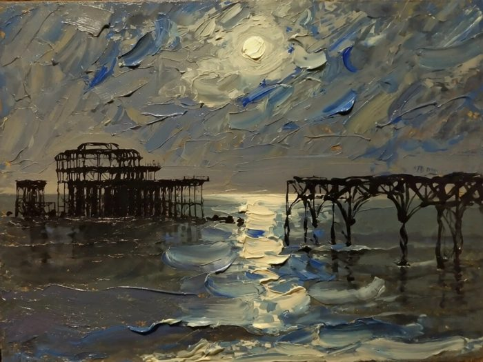
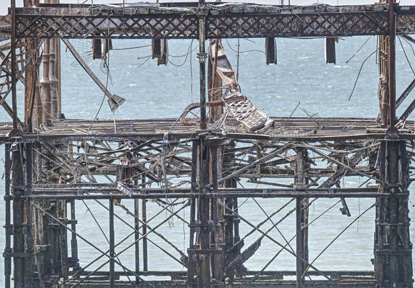
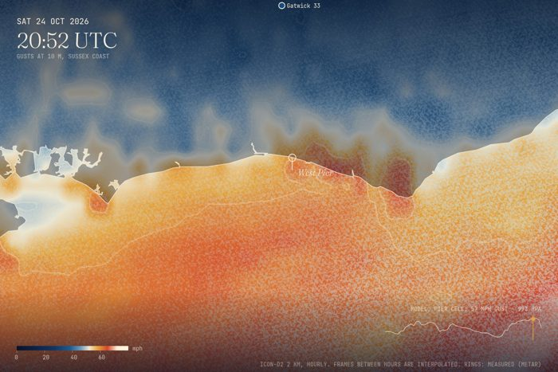
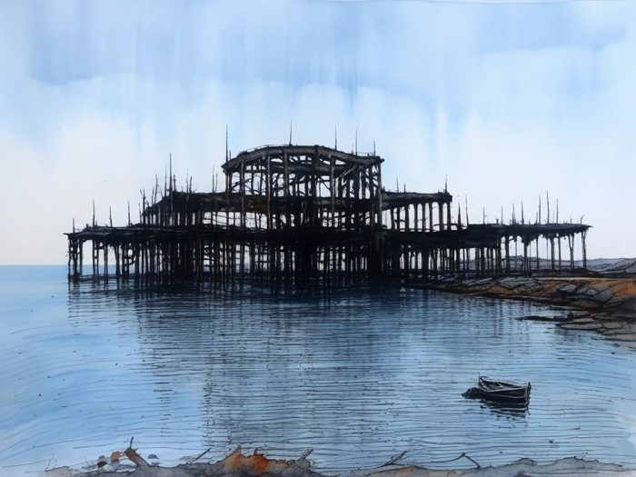

No.25
No.25 No.274
No.274 No.276
No.276 No.231
No.231 No.110
No.110 No.222
No.222 No.248
No.248 No.34
No.34 No.93
No.93 No.101
No.101 No.228
No.228 No.261
No.261 No.27
No.27 No.271
No.271 No.49
No.49 No.277
No.277 No.20
No.20 No.06
No.06 No.206
No.206 No.12
No.12 No.221
No.221 No.148
No.148 No.278
No.278 No.41
No.41 No.100
No.100 No.54
No.54 No.70
No.70 No.87
No.87 No.237
No.237 No.186
No.186 No.68
No.68 No.238
No.238 No.283
No.283 No.262
No.262 No.64
No.64 No.269
No.269 No.107
No.107 No.272
No.272 No.19
No.19 No.229
No.229 No.13
No.13 No.17
No.17 No.83
No.83 No.91
No.91 No.246
No.246 No.285
No.285 No.207
No.207 No.297
No.297 No.97
No.97 No.263
No.263 No.65
No.65 No.50
No.50 No.273
No.273 No.58
No.58 No.233
No.233 No.96
No.96 No.98
No.98 No.264
No.264 No.290
No.290
No.310 No.08
No.08 No.266
No.266 No.219
No.219 No.14
No.14 No.220
No.220 No.21
No.21 No.154
No.154 No.250
No.250 No.106
No.106 No.92
No.92 No.73
No.73 No.57
No.57 No.159
No.159 No.66
No.66 No.267
No.267 No.31
No.31 No.224
No.224 No.256
No.256 No.46
No.46 No.81
No.81 No.112
No.112 No.16
No.16 No.300
No.300 No.109
No.109 No.11
No.11 No.43
No.43 No.35
No.35 No.270
No.270
No.307 No.247
No.247 No.127
No.127 No.32
No.32 No.280
No.280 No.184
No.184 No.296
No.296 No.36
No.36 No.90
No.90 No.52
No.52 No.302
No.302 No.26
No.26 No.286
No.286 No.240
No.240 No.227
No.227 No.223
No.223 No.09
No.09 No.306
No.306 No.225
No.225 No.245
No.245 No.108
No.108 No.15
No.15 No.47
No.47 No.235
No.235 No.60
No.60 No.288
No.288 No.265
No.265 No.82
No.82 No.67
No.67 No.301
No.301 No.282
No.282 No.258
No.258 No.111
No.111 No.01
No.01 No.62
No.62 No.284
No.284 No.259
No.259 No.281
No.281 No.44
No.44 No.294
No.294 No.114
No.114 No.292
No.292
No.311 No.48
No.48 No.28
No.28 No.42
No.42
No.309 No.99
No.99 No.10
No.10 No.95
No.95 No.71
No.71 No.243
No.243 No.45
No.45 No.129
No.129 No.80
No.80 No.77
No.77 No.289
No.289 No.304
No.304 No.22
No.22 No.39
No.39 No.260
No.260 No.38
No.38 No.37
No.37 No.244
No.244 No.40
No.40 No.104
No.104 No.242
No.242 No.115
No.115 No.226
No.226 No.76
No.76 No.252
No.252 No.30
No.30 No.254
No.254 No.61
No.61 No.84
No.84 No.268
No.268 No.69
No.69 No.85
No.85 No.103
No.103 No.239
No.239 No.113
No.113 No.05
No.05 No.279
No.279 No.55
No.55 No.153
No.153 No.88
No.88 No.232
No.232 No.51
No.51 No.24
No.24 No.126
No.126 No.56
No.56 No.29
No.29 No.241
No.241 No.275
No.275 No.299
No.299 No.07
No.07 No.293
No.293 No.02
No.02 No.218
No.218 No.18
No.18 No.04
No.04 No.298
No.298 No.63
No.63 No.291
No.291 No.305
No.305 No.23
No.23 No.03
No.03 No.79
No.79 No.72
No.72 No.236
No.236 No.33
No.33 No.303
No.303 No.75
No.75 No.53
No.53 No.287
No.287 No.59
No.59 No.295
No.295 No.89
No.89